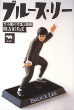
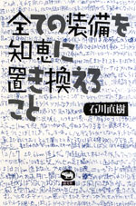
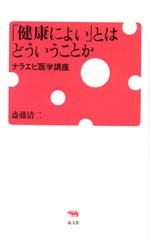
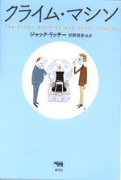
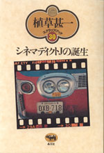
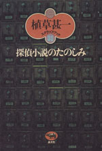
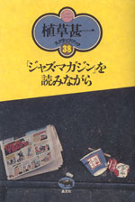
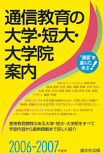
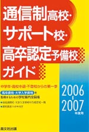

 |
映画・アジア |
| ブルース・リー 李小龍の栄光と孤独 |
|
| 四方田犬彦 | |
| 四六判 360頁 | |
| 定価2730円（本体2600円） | |
| 4-7949-6689-X C0074 | |
| 「お母さん、ぼくは東洋人だから、映画のなかでは白人を全員やっつけなければならないのです」。ブルース・リーこと李小龍が残した言葉である。著者は香港に足を運び、子役時代の映画を観、関係者を訪ね歩き、ブルース・リーの32歳の短い生涯に迫っていく。世界中でいまなお上映されている背景にあるナショナリズムと武術の関係性も探っていく。書き下ろし伝記。 |
 |
エッセイ・旅 |
| 全ての装備を知恵に置き換えること | |
| 石川直樹 | |
| 四六判 240頁 | |
| 定価1680円（本体 1600円） | |
| 4-7949-6681-4 C0095 | |
| 冒険家にして写真家、FM放送のパーソナリティとしても活躍する石川直樹の初めてのエッセイ集。近代計器を使わずに海を渡る伝統航海術を古老に学ぶためにミクロネシアを訪れ、北磁極から南極点まで、たずねた国が20カ国。地球上の極限、人類史上の聖地へと旅し、記録し続けてきた。写真とともに彼の足跡を追想する。 |
 |
医療・エッセイ |
| 「健康によい」とはどういうことか ナラエビ医学講座 |
|
| 斎藤清二 | |
| B6変型 判 208頁 | |
| 定価1680円（本体1600円） | |
| 4-7949-6667-9 C0047 | |
| 現在、日本では血圧が140以上は、高血圧。降圧剤を飲んでも20人に1人は脳卒中になるという。家系の中に脳卒中の人がいれば薬は有効？ 薬代が負担となる人はどうか？ 個人の実状にあわせ医療を行うことが、ナラティブ・ベイスド・メディスンという新しい考え方だ。身近な例をあげながら、健康や病気について考え、医学を捉えなおすメディカル・エッセイ。 |
 |
ミステリ |
| 晶文社ミステリ クライム・マシン |
|
| ジャック・リッチー 好野理恵・藤村裕美・駒月雅子・谷崎由依訳 | |
| 四六判 336頁 | |
| 定価2520円（本体2400円 ） | |
| 4-7949-2747-9 C0397 | |
| 殺し屋リーヴズの部屋を訪れた男はタイム・マシンを発明したと言った…。奇想天外な物語が巧みな話術で展開していく「クライム・マシン」、ありふれた妻殺し事件が思わぬ着地点に到達するMWA賞受賞作「エミリーがいない」など、オフビートなユーモアに満ちた短篇で人気作家となったジャック・リッチーの代表作17篇を収録。日本オリジナル編集。 |
 |
映画 |
| 植草甚一スクラップ・ブック 30巻 第13回配本 シネマディクトＪの誕生 |
|
| 植草甚一 | |
| 四六判 248頁 | |
| 定価1470円（本体1400円） | |
| 4-7949-2590-5 C0374 | |
| ぼくたちはシネマディクトなんだ！ 高らかな宣言とともに、植草さんの分身、シネマディクトＪが活躍をはじめた。映画を見るよろこびを全身全霊で満喫すると同時に、鋭く作家の精神を問いつめる。戦後の映画黄金時代をいきいきと伝えるエッセイを集成。（解説・田村隆一） |
 |
エッセイ |
| 植草甚一スクラップ・ブック 31巻 第13回配本 探偵小説のたのしみ |
|
| 植草甚一 | |
| 四六判 344頁 | |
| 定価1470円（本体1400円） | |
| 4-7949-2591-3 C0397 | |
| なにげなく手にとった一冊の本で、突然はっとする瞬間にぶつかる。これが探偵小説の醍醐味だ。この楽しみにとり憑かれて、古本屋通いに拍車がかかる。マードック、クリーシー、ジェームズ・メイヨ……うず高く積みあげたペーパーバックの山から数々の名作を掘りあてる植草甚一式推理小説案内を集成した力作評論。（解説・海渡英祐）） |
 |
ジャズ |
| 植草甚一スクラップ・ブック 38巻 第13回配本 「ジャズ・マガジン」を読みながら |
|
| 植草甚一 | |
| 四六判 272頁 | |
| 定価1470円（本体1400円） | |
| 4-7949-2598-0 C0373 | |
| ニューポートという煙草を買った日は、やっぱりジャズにご縁があった。散歩をしていると次つぎと素敵なジャズに出会ってご機嫌になる。こんな日には、喫茶店でジャズ雑誌を読みながら、ナット・ヘントフやレナード・フェザーとＪ・Ｊ氏の楽しいジャズ対話が始まるんだ。今日もモダン・ジャズの勉強。（解説・安田南） |
晶文社出版の本 TEL.03-5688-6881 |
 |
学校案内 | ||||||
| 通信教育の大学・短大・大学院案内 2006-2007年度用 | |||||||
| 晶文社出版編集部編 | |||||||
| A5判 264頁 | |||||||
| 定価1680円（本体1600円） | |||||||
| ISBN4-7949-9346-3 C0037 | |||||||
| 通信教育課程のある大学・短大・大学院全62校を、学習内容から履修方法まで詳細に紹介。法律からデザイン、看護・福祉まで多彩なジャンルを、大学卒業・資格取得・生涯学習など目的に応じて、テキスト・スクーリング・インターネットを利用した自由な学習スタイルで。注目の通信制大学院大学、専門職大学院など最新情報も。 | |||||||
 |
学校案内 | ||||||
| 通信制高校・サポート校・高卒認定予備校ガイド 2006-2007年度用 | |||||||
| 晶文社出版編集部編 | |||||||
| A5判 224頁 | |||||||
| 定価1995円（本体1900円） | |||||||
| ISBN4-7949-9678-0 C7037 | |||||||
| 全国の公立・私立通信制高校、通信制高校サポート校、高卒認定予備校403校を収録。うち131校は各校１頁に詳しい概要と募集要項を、271校は一覧で連絡先を紹介。技能連携校・大学入学資格付与指定校一覧も掲載。不登校・高校中退者などが高校卒業・大学入学資格を得る為の学校選びに最適な案内書。 | |||||||